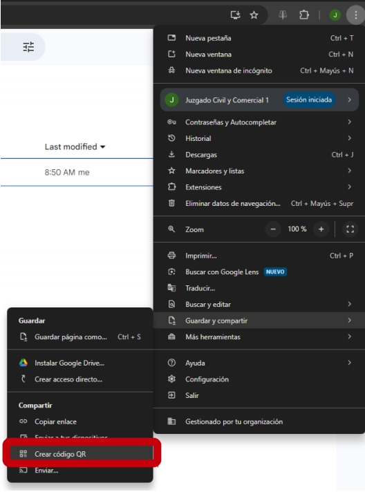
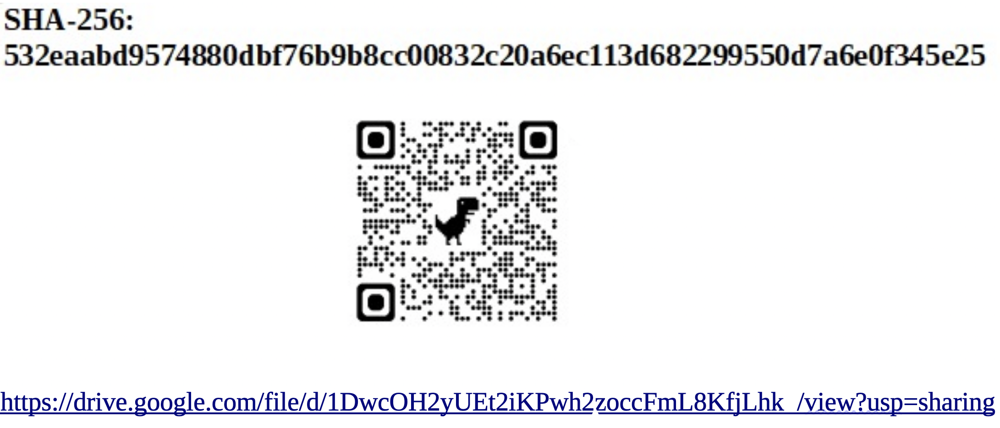

Objetivo
Este instructivo recomienda cómo adjuntar copias para traslado de manera digital en las notificaciones
para usarse en las cédulas que se diligencian a través del Bus Federal de Justicia o en cartas documento.
Pasos
-
📑 Prepare las copias
Es recomendable unir todas las copias en un solo archivo PDF.
Puede utilizar algún programa libre y gratuito como PDF24 para unirlas si las tiene en archivos separados. -
🔒 Generar el código hash
Nota: Esto es un código que permite verificar irrefutablemente que las copias que recibe el notificado son las originales que usted adjuntó y que no fueron alteradas.
Puede utilizar herramientas libres y gratuitas para generarlo, por ejemplo 7-Zip:
- Descargue 7-zip e instale.
- Haga click derecho en el archivo de las copias.
- Seleccione 7-Zip > CRC SHA > SHA-256.
Obtendrá un código de 256 caracteres único para esas copias. 🔑 -
☁️ Subir copias a la nube
Suba ese archivo en un servicio de almacenamiento en la nube (como Google Drive o Dropbox).
Asegúrese de que el nivel de acceso sea público y no restringido (que cualquiera con el link pueda acceder). -
📲 Generar el QR
Genere un código QR que direccione al link del archivo que subió a la nube.
Puede usar herramientas en línea como QR Code Generator.
O bien en Google Chrome (y otros navegadores) > Guardar y compartir > Generar Código QR
Obtendrá una imágen con el QR para descargar.
-
✍️ Insertar en la cédula
Redacte su cédula o carta en un archivo de texto y al final de la misma inserte el link, el QR y el hash generados.
Se verá similar a lo siguiente:
 -
📤 Exportar y presentar
✅ Convierta su cédula o carta a PDF y presentela via Forum, adjuntando recaudos si correspondiere.
BUS Federal: Consulte si existen requerimientos del Poder Judicial de la provincia destinataria en las Guías de Trámite de la página web del Bus Federal.
En el caso de requerirse tasas de justicia, deberá subir a Forum también el comprobante correspondiente.
📌
- 🚫 Es importante que no modifique el archivo de las copias en la nube una vez que envió el documento.
- 🌎 Los documentos compartidos deben tener acceso público para poder ser consultados.
- ✅ Puede verificar la integridad del archivo comparando los hashes antes y después de enviarlo.
- 🛠️ Use herramientas oficiales y de confianza para garantizar seguridad.